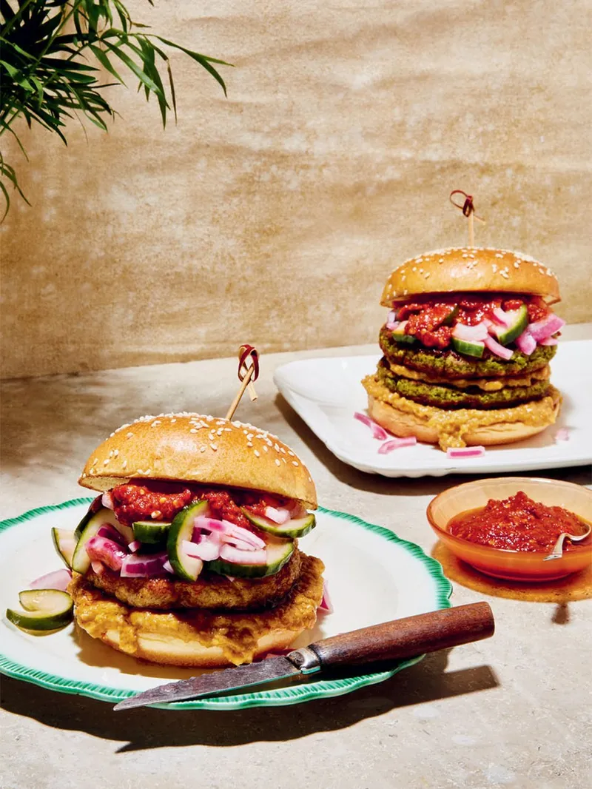

SatayBurgers

Lets see the ingridients needed for this recipe:
- CUCUMBER PICKLES
- SIMPLE CHILLI SAUCE
- PEANUT SAUCE
- Lettuce
- Satay Dip
- Burger Bun
- Chicken Breast
Lets see the method for creating this burger.
- Dip the chicken breast in the satay dip and leave the chicken to marinate for 1 hour. After that, air-fry the chicken breat for 15 minutes on 150C.
- Once the chicken is cooked, toast both halves of the burger bun.
- After that, we need to assemble the burger bun. For assembly, put the chilli sauce on top half of the bun and peanut sauce on the bottom half. After that,place leetuce on the bottom half followed by cucumber pickel and cooked chicken breasr.
- Serve and enjoy.
That's how you can make a perfect burger and enjoy.
Back to homepage.